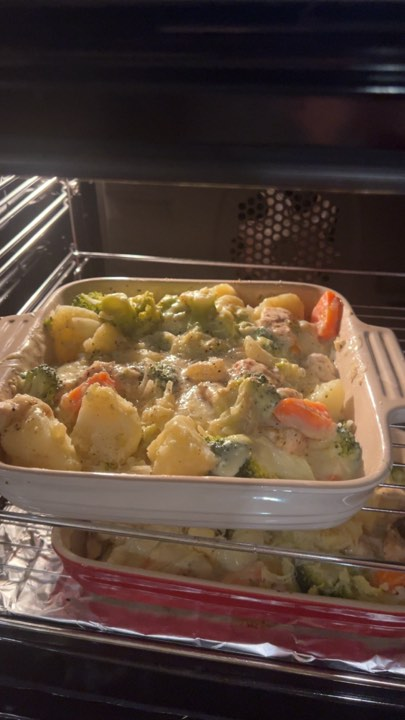

Chicken Broccoli Casserole

Description
Serves 4
Chicken broccoli casserole is a simple to make comfort food, giving a balance of healthy veg and comforting chicken pieces with tangy mature cheddar cheese.
Ingredients
- 1kg potatoes
- 2 carrots
- brocolli
- 1 onion
- 2 garlic cloves
- 1 chicken stock cube
- semi skimmed milk
- 1-2 tablespoons cornflour
- handful grated mature cheddar
- ground black pepper
- ground white pepper
- salt
- 2 large chicken breasts chopped and marinated in herbs of choice and olive oil
Method
- Peel, chop and boil potatoes. Set aside while preparing other vegetables.
- Peel, chop and boil carrots until firm.
- Chop onion, garlic and drizzle olive oil in oven dish. Add in potatoes, carrots, broccoli, black and white pepper. Mix gently to distribute evenly. Set aside while preparing sauce.
- Add semi-skimmed milk to a saucepan. Simmer gently, do not allow to boil. Add stock cube to mixture, once dissolved add a handful of grated cheese until melted. Add cornflour to a small amount of water and gradually add to cheese sauce. Until desired thickness. Sprinkle in some ground black and white pepper.
- Add chicken breasts to oven dish. Stir in with vegetables and add cheese sauce gradually while stirring. Top with desired amount of grated cheese.
- bake in oven at 180c for 45 minutes until golden brown.
serve and enjoy!
Back to recipes